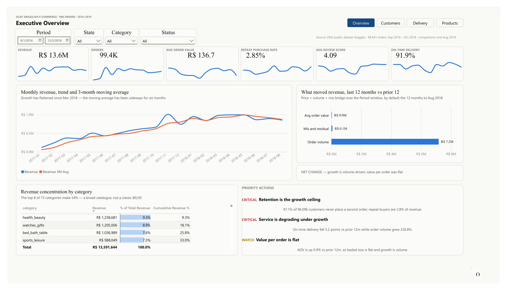
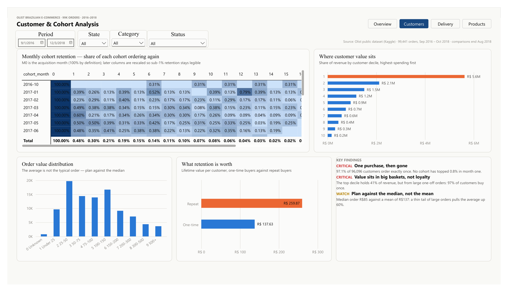
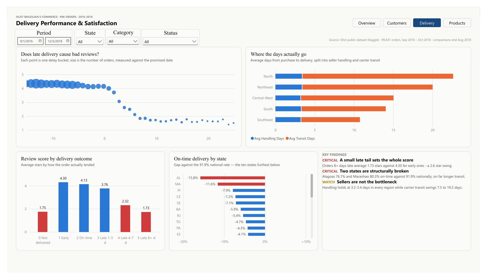
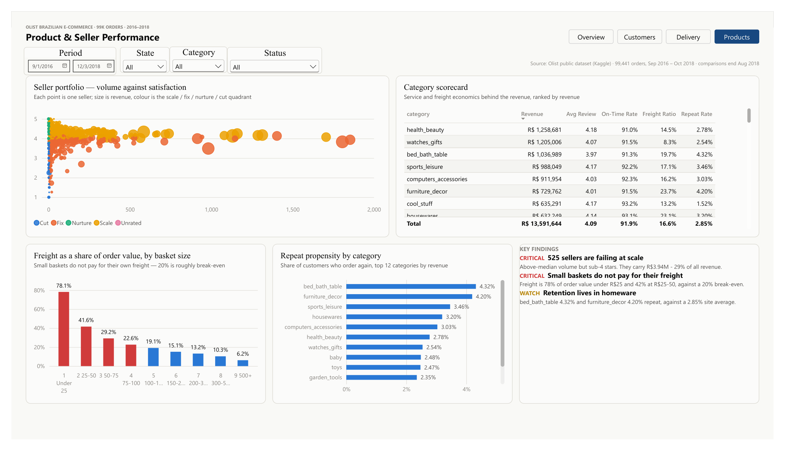

Retention is the growth ceiling
97.1% of 96,096 customers never place a second order. Repeat buyers bring in just 2.8% of revenue.
Data Analyst · Baguio City, Philippines
I'm Vicson Yaris, a Computer Engineering graduate and top-of-class Data Analytics Level III certificate holder. I work in Power BI, DAX, Excel, PostgreSQL and Python, and I've automated real reporting workflows in the Power Platform.
Featured case study
A four-page Power BI report on Olist, Brazil's largest department-store marketplace. Revenue climbed through 2017 and then went sideways from March 2018. I set out to explain why, and to rank what to fix first.
Is the plateau a demand problem, a value-per-order problem, or a customer-experience problem? And which fixes are worth doing first?
Olist public dataset (Kaggle): 8 related tables covering orders, items, payments, reviews, customers, sellers, products and geolocation. 99,441 orders from Sep 2016 to Oct 2018.
Power Query to clean and shape the tables, a star-schema model, and DAX measures for cohorts, moving averages, deciles, the revenue bridge and seller segmentation. Four synced pages with shared slicers.
Growth flattened from March 2018. The moving average has been sideways for six months.
Priority actions
97.1% of 96,096 customers never place a second order. Repeat buyers bring in just 2.8% of revenue.
In the 12 months to Aug 2018, revenue rose R$ 7.27M on the year before, and 99% of that came from order count. Average order value moved just 0.9%.
The top 8 of 73 categories make only 54% of revenue. No single category can carry a turnaround.

Lifetime value per customer. A repeat buyer is worth 1.9× a one-time buyer.
Revenue by customer decile, highest-spending first. The top 10% hold 41%.
Key findings
No monthly cohort has topped 0.8% retention in its second month. Across all cohorts, month-1 retention averages 0.48%.
The top 10% of customers hold 41% of revenue, but it comes from large one-off orders. With 97% buying once, there's no loyal VIP base yet.
The median order is R$ 85 against a mean of R$ 137. A thin tail of large orders pulls the average up 60%.

Average stars by how the order actually landed against the promised date.
Average days from purchase to delivery, split into seller handling and carrier transit.
Key findings
Orders 8+ days late average 1.73 stars against 4.30 for early ones, a swing of 2.6 stars.
Alagoas (76.1%) and Maranhão (80.3%) deliver on time far less often than the 91.9% national rate.
Seller handling is about 3 days in every region. Carrier transit ranges from 7.5 days (Southeast) to 19.2 (North).

By basket size in R$. Around 20% is roughly break-even, and small baskets don't pay for their own freight.
Share of customers who order again. The top 8 categories by revenue are shown, against the 2.85% site average.
Key findings
These sellers have above-median volume but average under 4 stars, and they carry R$ 3.94M, or 29% of all revenue.
Freight is 78% of order value under R$ 25 and 42% at R$ 25–50, against a 20% break-even.
bed_bath_table (4.32%) and furniture_decor (4.20%) repeat well above the 2.85% site average.

Excel case study
A sales and distribution workbook for a fictional FMCG distributor in Baguio that serves CAR, Regions I–III and NCR. It's built entirely in Excel: formulas, PivotTables, slicers and VBA. Pick a year, region, channel or category, and every KPI, chart and top-5 list updates.
The data is synthetic. No real Philippine FMCG transaction data is public, so I generated 30,021 order lines with a Python script. The regions, provinces, cities and 2024–2025 holidays are real. The brands, outlets and people are made up.
Where do this distributor's sales come from? Which products and outlets matter most, how does demand move through the year, and which salesmen are hitting target?
30,021 order lines from Jan 2024 to Dec 2025, plus 260 outlets in 6 channels, 32 SKUs in 6 categories, 14 salesmen and their monthly targets.
SUMIFS over dynamic named ranges, INDEX/MATCH lookups, an approximate-match commission table, PivotTables on one shared cache with slicers, and VBA for refreshes, PDF exports and cleaning a messy monthly import.
2025 ran ahead of 2024 in 10 of 12 months. December is the peak in both years.
Key findings
Net sales rose from ₱302.4M in 2024 to ₱344.8M in 2025, and gross margin held at about 15%.
December is the peak month for every category. It averages 1.60× a normal month.
Beverage sales run 1.17× a normal month in March and 1.29× in April, so stock should build before the hot months.
Actual net sales ÷ target. Red bars are below 90%, where the commission rate drops to zero.
Key findings
SM-14 (hired 2024) reached 72.5% of target and missed in 11 of 12 months. SM-09 (also hired 2024) reached 76.6% and missed in 9.
8 of 14 reps finished 2025 below target. As a team they delivered ₱344.8M against ₱363.5M, or 94.8%.
₱3.47M in commission went to the reps at 90% or above. An approximate-match lookup sets each rep's rate.
Net sales are for 2025. 41 wholesalers bring in more than half the revenue.
Key findings
Grocery and wholesaler accounts are 16% of outlets but 56% of net sales. Losing one hurts more than losing dozens of sari-sari stores.
27 of 260 outlets haven't ordered in over 90 days, and 24 more are at risk (over 45 days).
Across both years, Snacks have a 3.0% return rate, against 1.4% for the company as a whole.
Recalculates every formula, refreshes the pivot cache and stamps the time on the Dashboard.
Saves the Dashboard as a one-page PDF, with the active filters in the file name.
Loops through the 14 reps and saves a one-page report for each, ready to email.
Cleans a messy CSV and appends it to the sales data: header names in any order, mixed date formats, peso signs, "5%" discounts, lower-case IDs. Lines it can't fix go to a log with the reason.
Puts the Dashboard back to the latest year with every other filter on All, and clears the slicers.
Three PivotTables share one cache, so four slicers filter all of them at once and the file stays smaller.
Macros are optional. Windows blocks macros in downloaded files, so right-click the file, open Properties and tick Unblock to use the buttons. The formulas, charts and pivots work without macros.
More work
I rebuilt HR reporting workbooks with advanced Excel formulas, PivotTables and Power Query, then moved the key metrics into Power BI dashboards built on DAX measures and calculated columns, with a Looker Studio view for sharing.
I replaced a manual applicant-tracking process with a Power Apps front end and Power Automate flows on SharePoint lists. This cut manual processing time by about 40%.
This IoT system used ESP32 sensors running MicroPython to stream readings to Firebase Realtime Database, and a Django web app visualised production data. I analysed the usage data to improve biogas generation efficiency.
Background
2024 – Present
2025
Credentials
Top of the class
Northridge Institute of Business and Technology
University of Baguio · 2020 – 2026
Toolkit
Contact
I'm looking for entry-level data analyst and BI roles, and I'm open to analytics and automation collaborations. The quickest way to reach me is email.